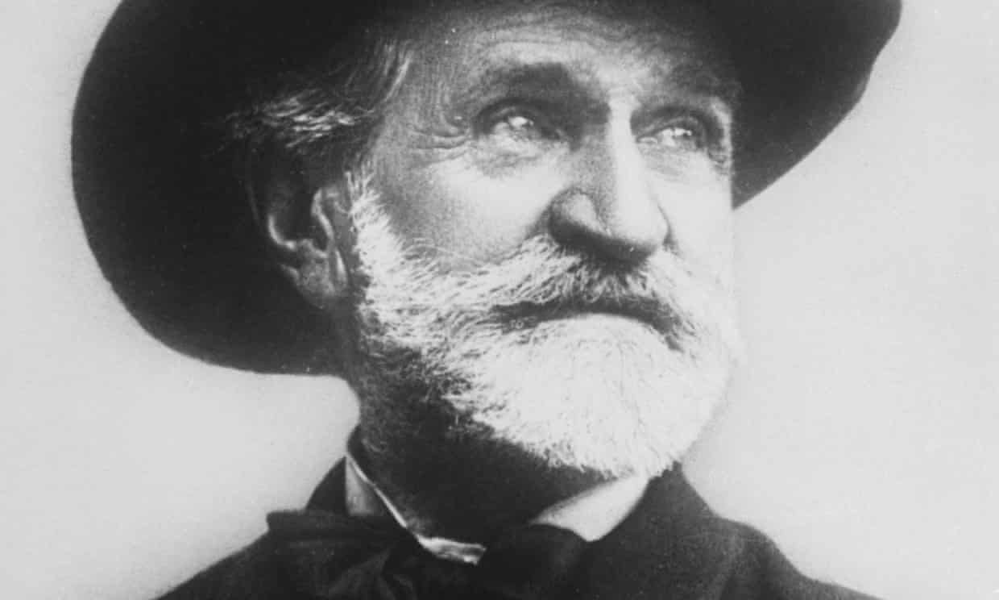
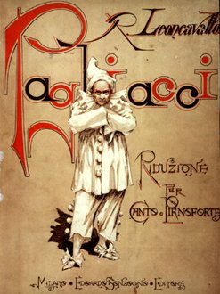
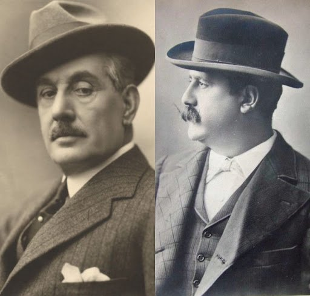
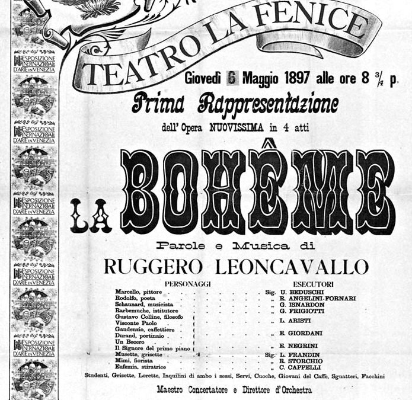
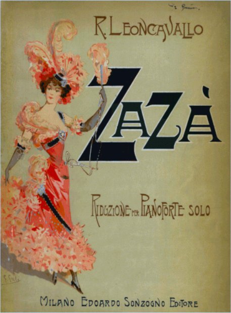
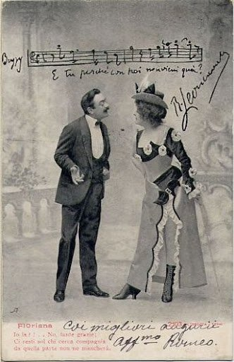

Giuseppe Verdi

The world of Italian opera during the 19th century was dominated by Giuseppe Verdi. As Verdi aged, however, his operatic output became increasingly sparse, with long gaps between major works. Naturally, with the importance of the art form to Italian culture at the time, other composers rose up to fill the void.
The most prominently revered today is Giacomo Puccini, who began seeing success in the 1880s. His early success overshadowed his contemporaries during the final decade of the century with such hits as Manon Lescaut (1893), La Bohème (1896), and Tosca (1900). Laura Protano-Biggs writes that "Puccini can be best understood as just one member of a wider circle of composers born at mid-century who created a new and distinct soundscape. These composers all operated in Milan between the years of 1880 and 1900 and were dubbed the giovane scuola or 'young school.'"
The giovane scuola consisted of Puccini, Alfredo Catalani, Alberto Franchetti, Pietro Mascagni, Francesco Cilea, Umberto Giordano, and Ruggiero Leoncavallo.
Leoncavallo's Early Life and Music
Though Leoncavallo's autobiographical notes were greatly exaggerated when compared to the facts, musicologists have been able to decipher most of the fact from the fiction.
Leoncavallo was born in Naples in 1857. His father was a judge — the plot of Pagliacci is reported to be a true account of a case over which his father presided. In his teens, Leoncavallo enrolled at the Naples Conservatory and studied piano and composition. In 1876 he relocated to Bologna and began work on a triptych about the Italian Renaissance entitled Crepusculum (Twilight), conceived as a homage to Wagner's Ring Cycle. While in Bologna he also attempted, unsuccessfully, to secure a premiere of his first complete opera Chatterton.
Leoncavallo moved to Cairo, then Paris, where he accompanied singers in music halls and continued to compose. One Paris collaborator, baritone Victor Manuel, introduced him to publisher Giulio Ricordi and encouraged him to Milan, where he would eventually rub elbows with Ricordi, his protégé Puccini, and other prominent members of the Milanese operatic elite.
Librettist Giuseppe Adami — a collaborator of Puccini's on La Rondine, Il Tabarro, and Turandot — once wrote of Leoncavallo:
"There was to be found to be hanging about the Casa Ricordi a plump young man, rather short of stature, with a quaff of black hair dangle over his forehead like a question mark. That quaff questioned the owner's future. Did it lie in poetry or music? He couldn't make his mind up either way."
Leoncavallo did indeed try his hand at writing libretto — and with such talent that he was even brought in by Ricordi to do rewrites on Puccini's Manon Lescaut.
The Sonzogno Concorso of 1889 & Pagliacci

Ricordi's primary competition in fin-de-siècle Milan was Eduardo Sonzogno's publishing house. Sonzogno held a one-act opera composition competition in 1889, which was won by Pietro Mascagni with his naturalist tale of love and murder Cavalleria Rusticana. Using Mascagni's hit as a dramatic and musical template, Leoncavallo set Crepusculum aside and penned his own scenario — originally also a one-act — based on passion and murder, and based at least partially on a real life case that his father had overseen. Leoncavallo's Pagliacci not only met but surpassed the popularity of Cavalleria Rusticana, and the Cav/Pag double bill was born. Mascagni's triumph and Leoncavallo's follow-up changed the Italian operatic soundworld and birthed the verismo movement, which would dominate the standard operatic repertory worldwide for years to come.
The success of Pagliacci (1892) opened doors for Leoncavallo, who was then able to produce and premiere works such as I Medici (1893) — the only entry of the Crepusculum triptych to be completed — Chatterton (1896), La Bohème (1897), and Zazà in 1900.
The Two Bohèmes

In 1893, Puccini was setting his sights on his next big project as he finished Manon Lescaut. He opted to adapt Murger's popular story of lovable Parisian misfits, Scènes de la Vie de Bohème. After receiving an initial sketch from his librettist and getting the go-ahead from his publisher, Puccini was ready to move forward — until he stumbled into one of the most ill-fated coffee dates in music history.
Puccini bumped into Leoncavallo at a café in Milan in March of 1893. As fellow Italian opera composers, the relationship between the two had been very amicable until recent history changed their dynamic — only one year prior, Leoncavallo had achieved superstardom with Pagliacci, and had unknowingly become one of Puccini's rivals.
While exchanging pleasantries, Puccini and Leoncavallo came to the awkward realization that they were both working on an opera adaptation of Bohème. Instead of musing about the coincidence, Leoncavallo became furious. He reminded Puccini that he had offered him the libretto for his Bohème the year before, which Puccini had turned down. Puccini vehemently denied this, but Leoncavallo couldn't be dissuaded — and he used his ties with the local press to release multiple public statements, preemptively putting Puccini on blast. In one press release, Leoncavallo even claimed that Puccini had "confessed" to coming up with the idea to adapt Bohème only after Leoncavallo had already begun working on his project.
Puccini fired back, publicly writing: "what does it matter to Maestro Leoncavallo? Let him compose, I will compose. The audience will decide." He also made it abundantly clear that he had been working on Bohème for a mere two months — suggesting no long-con behind the curtain. But this wasn't exactly true.

In 1926, two years after Puccini's death, friends and former neighbors published a book of recollections about the composer called Puccini intimo. In the book, they remembered that Puccini — despite unabashedly denying it in 1893 — had indeed been offered Leoncavallo's libretto for Bohème in '92 and had turned it down, just as Leoncavallo had said.
American biographer Mary Jane Phillips-Matz finds the circumstances of Puccini's then-reported progress on Bohème suspect as well. Although Puccini claimed he had been working on the project for two months prior to their meeting, surviving letters to one of his librettists suggest the opera had been in production far longer. Musicologist Charles Osborne notes that it's actually "quite likely" that Puccini stole inspiration from Leoncavallo, and that having a rival composer working on an enviable project was probably reason enough to ignite Puccini's infamously competitive attitude.
The Bohème intellectual property was in the French public domain, so neither composer had any legal right to exclusivity. While both operas eventually premiered, only one became a cornerstone of today's operatic repertoire.
Zazà

Leoncavallo's reputation today is one of a "one-hit-wonder," but it is worth noting that his critical reception was often in the hands of journalists who were Verdi devotees and slow to accept the sonic innovations of the giovane scuola and the verismo movement. Many journals also saw it as treachery when Leoncavallo signed with Casa Sonzogno rather than continuing to publish with Giulio Ricordi.
Leoncavallo's fifth opera Zazà had great — albeit temporary — international success for over two decades beyond its premiere in 1900. It was staged at the Metropolitan Opera in New York City in 1920 for three consecutive seasons and was even chosen as iconic soprano Geraldine Farrar's farewell performance in 1922.

Zazà is based on the Pierre Berton/Charles Simon play of the same name, which did very well at the Paris Vaudeville in 1898. Zazà had limited long-term marketability because the compositional style was much more declamatory and not rounded into excerpt-able arias — which would have sold sheet music and raised awareness for the work. Nevertheless, Zazà was a very popular property for over thirty years, with multiple theatrical and film adaptations.
Three versions of Zazà were published by Casa Sonzogno over the years. The Prima Edizione, following the opera's premiere in 1900; the Ultima Edizione in 1919 — a streamlined version that eliminated much of the sonic hubbub of Act I and focused more efficiently on the Zazà/Milio relationship; and the 1947 Nuova Versione, which abridged much of the non-essential plot, the chorus, and several supporting characters. This version was published by Casa Sonzogno nearly thirty years after the composer's death and includes new realizations of certain musical moments by Renzo Bianchi. It also simplifies the vocal tessitura of the more demanding roles.
The Crane Opera Ensemble will be performing a version cut from sections of both the 1919 ultima edition and the 1947 nuova version — an effort to employ more of our talented singers in the Act I ensemble while still preserving the developing instruments of our young artists-in-training.
Join us March 24–27, 2022, as The Crane Opera Ensemble brings Leoncavallo's Zazà to the Proscenium Theatre in the SUNY Potsdam Performing Arts Center.